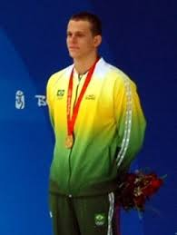
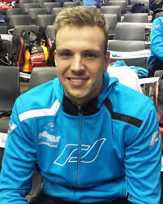
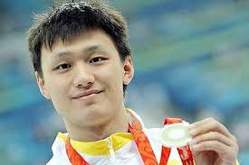
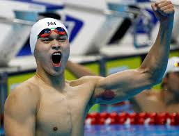
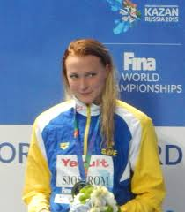
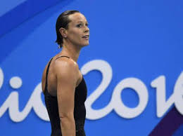
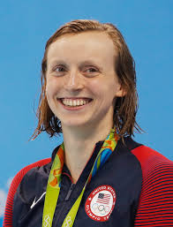

Récords del mundo actuales
Antes de ver los principales avances tecnológicos, veremos algunos records masculinos y femeninos en la actualidad en la especialidad libre.
Masculinos:
| Prueba | Tiempo | Fecha | Nadador | Nacionalidad |
|---|---|---|---|---|
| 50 m libre | 20.91 | 18/12/2009 | César Cielo | Brasil |
| 100 m libre | 46.91 | 30/7/2009 | César Cielo | Brasil |
| 200 m libre | 1:42.00 | 28/7/2009 | Paul Biedermann | Alemania |
| 400 m libre | 3:40.07 | 26/7/2009 | Paul Biedermann | Alemania |
| 800 m libre | 7:32.12 | 29/7/2009 | Zhang Lin | China |
| 1500 m libre | 14:31.02 | 4/8/2012 | Sun Yang | China |
Algunas imágenes de estos nadadores:
   Femeninos:
| Prueba | Tiempo | Fecha | Nadadora | Nacionalidad |
|---|---|---|---|---|
| 50 m libre | 23.67 | 29/7/2017 | Sarah Sjoström | Suecia |
| 100 m libre | 51.71 | 23/7/2017 | Sarah Sjoström | Suecia |
| 200 m libre | 1:52.98 | 29/7/2009 | Federica Pellegrini | Italia |
| 400 m libre | 3:56.46 | 7/8/2016 | Katie Ledecky | Estados Unidos |
| 800 m libre | 8:04.79 | 12/8/2016 | Katie Ledecky | Estados Unidos |
| 1500 m libre | 15:20.48 | 16/5/2018 | Katie Ledecky | Estados Unidos |
Algunas imágenes de estas nadadoras:
  Cambios tecnológicos
Alarmas
Estas alarmas son usadas en todas las competiciones, pero tienen especial importancia en aquellas en las que compiten nadadores con discapacidades. Estas alarmas son las encargadas de dar inicio a la competición, en las competiciones con nadadores discapacitados se suelen usar ambas, así aquellos que tengan problemas de audicion pueden ver la señal visual, en cambio, aquellos con problemas visuales podrán oír la alarma sonora. Estas alarmas en algunas ocasiones también son usadas por si durante el desarrollo de una competición surge alguna emergencia y es necesario que los médicos encargados deban entrar a la piscina para socorrer a un deportista, al activar las alarmas, todos los nadadores verán y oirán la señal y de esa forma pararán de inmediato la competición sin entorpecer las labores de los sanitarios.
Cámaras subacuáticas
Las cámaras subacuáticas, además de mejorar la visión de la competición a los espectadores, sirven a los jueces y equipos. En el primer caso, si tienen alguna duda de alguna acción incorrecta a la hora de realizar un viraje u otra fase de la competición, podrán revisar desde todos los ángulos con estas cámaras y de esa forma si lo consideran necesario descalificar al deportista. En el caso de los equipos, tiene la misma utilidad, pero en vez de para descalificar a los competidores, ver en qué aspectos deben trabajar más para poder obtener una mayor velocidad. También existen diferentes dispositivos para medir la aceleración de los corredores y así poder mejorar la técnica de los nadadores.
Bañadores
Sin duda es el principal objeto que le debe dar la aerodinámica correcta para poder tener mayor velocidad. Los bañadores han sido uno de los temas que más discordia ha generado en el mundo de la natación. Hace varios años, decidieron incluir en los bañadores fibra de carbono, de esta forma obtenían un bañador más ligero y con una mejor flotación para los competidores. Al principio, algunos equipos se opusieron a esta materia, ya que creían que no cambiaba solamente el bañador, también cambiaba la forma de nadar ya que los nadadores ganaban una mayor horizontalidad. La Federación Internacional de Natación aceptó el uso de los bañadores con fibra de carbono, pero tras acabar las competiciones y ver que la diferencia con las competiciones anteriores era muy grande, decidió prohibir los bañadores que contuvieran este tipo de material. Actualmente las marcas deportivas fabrican los bañadores con otra serie de materiales que permiten una mejor aerodinámica pero que sí están permitidos por la FINA.